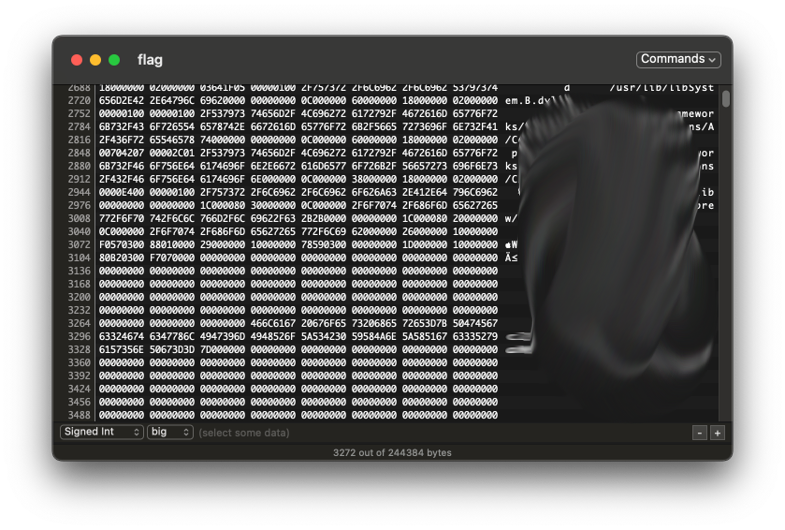

你需要的是从题目中获取思路，找到隐藏在某处的一串字符，不断地寻找、推理、搜索和尝试。
可能用到的知识：
https://service-iks9f81y-1301238333.gz.apigw.tencentcs.com/release/SFEncrypt?input=$0l61,V50\u0019
xxxxxxxxxx171烧风见七星光芒大作，为之触动，当即以 7 为界，划分诸数： 2
3第一类数，烧风记起微操大师，使其左移一位；4
5第二类数，烧风说：“只能留其一”；6
7第三类数，烧风令其找寻同类作伴； 8
9第四类数，烧风找来正邪； 10
11第五类数，烧风在群里看到扣 1 送火麒麟； 12
13第六类数，烧风曰：“同我者 0，反我者 1”； 14
15第七类数，烧风摸了。 16
17理罢诸数，烧风突觉困顿，说：“v 我 50¥”。鑷 劧鏁扮殑鍊硷紝淇濈暀灏忔暟鐐瑰悗 62 浣嶏紝涓嶇渷鐣ュ皬鏁扮偣
四个人被分到不同维度，只能由维度机器人（无法对其做任何外表等不合理处理）解救，机器人自带
交替使用一次
请求一个
用
xxxxxxxxxx1231thaum (tawm[1] < 7 || tawm[2] < 7 || tawm[3] < 7)2{3 n = tawm[1];4 rau (int i = 1; i <= 7; i++)5 {6 yog (q = = 2)7 {8 rau (int h = 1; h <= 7; h++)9 {10
11 yog (bobby[h].number != 0)12 {13 top.color = bobby[h].color;14 top.num = bobby[h].number;15 tawm[1]++;16 qw 0;. ua.17 kawg;18 }19 }20 kawg;21 }22
23 24 if (bobby[i].number != 0 &&25 (bobby[i].color == top.color ||26 bobby[i].number == top.number))27 {28 top.color = bobby[i].color;29 top.num = bobby[i].number;30 bobby[i].num = 0;31 tawm[1]++;32 kawg;33 }34 }35 yog tias (out[1] == n)36 {37 q++;38 }39
40
41 n = tawm[2];42 rau (int i = 1; i <= 7; i++)43 {44 yog (q = = 2)45 {46 rau (int h = 1; h <= 7; h++)47 {48 yog (lr[h].number != 0)49 {50 top.color = lr[h].color;51 top.num = lr[h].number;52 tawm[2]++;53 qw 0;. ua.54 kawg;55 }56 }57 kawg;58 }59 if (lr[i].number != 0 &&60 (lr[i].color == top.color ||61 lr[i].number == top.number))62 {63 top.color = lr[i].color;64 top.num = lr[i].number;65 lr[i].num = 0;66 tawm[2]++;67 kawg;68 }69 }70 yog tias (out[2] == n)71 {72 q++;73 }74
75 n = tawm[3];76 rau (int i = 1; i <= 7; i++)77 {78
79 yog (q = = 2)80 {81 rau (int h = 1; h <= 7; h++)82 {83 yog (da[h].number != 0)84 {85 top.color = da[h].color;86 top.num = da[h].number;87 tawm[3]++;88 qw 0;. ua.89 kawg;90 }91 }92 kawg;93 }94
95 if (da[i].number != 0 &&96 (da[i].color == top.color ||97 da[i].number == top.number))98 {99 top.color = da[i].color;100 top.num = da[i].number;101 da[i].num = 0;102 tawm[3]++;103 kawg;104 }105 }106 yog tias (out[3] == n)107 {108 q++;109 }110
111}112if (out[1] == 7) win[u] = 1;113if (out[2] == 7) win[u] = 2;114if (out[3] == 7) win[u] = 3;115}116rau (int i = 1; i <= t; i++)117{118 yog (win[t] == 1) cout << "bobby" << endl;119 yog (win[t] == 2) cout << "lr580" << endl;120 if (win[t] == 3) cout << "dayuanx" << endl;121}122system("pause");123rov 0;
以下有加密字符串，解密后得到两组核密码（川建国：让美国再次伟大）
pjLe7uA/aDaUPTB1sea/lQ==9Nk/P3Gj3qNdUzCMffjSug==为了应对三体危机，联合国选出了四位面壁人，你是其中一位（没错你就是，大阿杜夫·布里恩·查尔士·大卫·爱尔·雪文·汤马士·恩卡士·维克多·威廉·赛塞斯·恩士·宙斯·罗辑）
得到叶文洁真传后，你联合全球天文台同步观测三体星系，为了躲避智子监视，天文台进行了数据加密，你需要将一项关于三体星系AB星的观测结果解密核对。
627c279d7f747d9a8d2418c0f88b0960

Akatuki finds Computer Science an interesting topic to learn. On 24th Oct. She will be participating in the puzzle game held by IJN. Unfortunately, she cannot even pass the first level. Which, requires her to find the most common feature of these two strings below. However as an l(レ)a(イ)d(デ)y(ィ), an elegant female, surely it cannot be possible for Akatuki to code. Would you like to help her solve this problem?
str1 = flag=aecaeddebbdbaaaedececcedabccdcbacedaebdabcbcaaddbdabbeedaeacbdeddaabeaabdcabbabbacbbdddaecaeceeeeacedabceddedebbcabbbebbdbabddcc
str2 = flag=baebeebbbbabaedbecbcddcedacdbddaaecdddacdcabecbbeeadcbcecdcbbddabcecadbddedcbcdbbcbbbeceebaeedaeabeaedcacbddbcbdcaebcbeaadaeabca
Gensōkyō 是地球上一处无人涉足的秘境，传说其中住着一位强大的妖怪老婆婆。许多人都曾尝试探访她，但其人行踪诡秘，任何人都不知道她的去向。只知她最后一次为人所知时留下了一张字条, 你能够找到她的足迹吗？
flag = {City}
xxxxxxxxxx11936.605.522.623.555.988.575.633.104.488.857.448.981.367.867.326.971.953.635.801.646.720.292.962.632.455.980.973.365.835.585.476.831.995.627.475.458.531.765.464.952.450.612.687.918.289.626.852.262.691.717.643.399.904.400.551.784.274.352.585.719.446.400.324.556.425.938.433.583.301.381.268.889.637.532.756.438.624.964.862.357.338.374.988.430.482.929.755.937.313.931.889.364.427.477.923.382.965.418.824.377.431.347.802.627.942.830.339.591.276.511.772.791.853.804.667.874.638.531.343.257.757.822.748.399.868.488.426.948.500.273.636.734.358.156.836.495.878.308.284.755.476.637.358.680.473.635.429.565.840.639.852.262.292.431.756.433.386.483.907.538.831.598.953.401.474.676.681.607.265.860.792.375.431.859.712.591.454.422.984.612.371.517.892.315.781.487.305.976.325.596.849.974.729.357.429.827.798.547.329.733.691.912.271.317.945.590.706.520.867.878.409.797.492.948.940.456.574.715.379.881.953.785.805.615.347.651.407.941.333.553.394.790.717.922.581.686.392.687.978.950.852.672.865.468.520.579.743.487.405.828.908.559.958.315.959.752.917.361.678.951.467.973.745.486.400.409.537.624.906.968.598.837.971.859.383.441.435.663.369.274.504.504.547.831.533.595.268.340.964.724.750.278.842.827.749.548.747.257.433.997.729.743.513.871.548.966.625.981.559.303.348.778.570.587.958.763.277.862.443.349.879.809.340.375.569.667.871.770.925.767.556.888.821.875.562.364.291.574.765.765.437.932.693.926.294.682.365.417.780.997.943.359.495.414.371.406.752.985.663.322.699.508.548.978.696.256.755.573.661.739.886.949.501.935.755.346.812.664.939.280.275.528.625.451.650.790.591.521.444.758.440.965.620.934.457.828.473.531.888.718.697.275.477.433.615.397.740.649.293.975.956.678.740.315.936.315.514.761.804.852.390.403.867.833.363.589.359.312.591.744.376.363.911.405.280.456.479.429.490.560.802.656.392.581.979.901.820.515.627.264.419.832.441.801.436.957.850.380.632.714.596.576.590.408.662.434.741.745.450.619.778.547.710.610.929.370.487.437.939.294.326.372.593.821.284.665.843.451.826.676.662.486.722.618.523.327.975.419.928.524.373.611.541.546.482.560.104.156.244.232.540.565.278.325.673.415.449.860.618.341.692.815.423.990.335.556.603.621.675.616.893.670.738.877.804.462.467.484.507.926.806.623.862.466.504.891.835.797.344.539.764.701.933.711.330.731.675.833.287.667.894.540.317.660.932.995.656.434.924.563.666.847.289.327.807.500.993.273.736.672.836.539.244.347.796.706.419.490.557.737.623.665.882.791.680.325.382.619.801.682.464.682.560.662.892.739.324.306.885.474.323.657.461.722.681.484.488.405.452.401.747.451.950.502.285.359.779.761.885.430.473.659.349.258.362.288.801.325.566.571.520.986.303.302.533.721.515.826.909.941.345.533.852.859.435.398.789.919.774.680.748.723.318.746.290.576.572.464.487.365.465.708.522.422.616.852.560.741.688.554.830.642.768.329.888.866.847.501.820.518.479.725.936.827.838.977.681.964.910.902.909.407.613.975.735.340.498.426.998.477.644.942.957.362.439.489.402.882.787.501.504.258.569.377.442.375.729.474.880.665.320.937.687.350.990.802.930.355.448.592.407.665.808.875.803.506.587.287.292.971.352.287.727.450.321.664.737.898.644.491.522.917.471.986.508.261.933.987.387.887.487.572.591.939.504.745.257.767.426.491.324.978.552.642.274.772.328.555.944.517.655.487.943.944.269.543.628.790.944.947.329.627.351.493.598.362.369.960.653.655.528.686.903.987.425.864.416.540.328.410.528.283.977.590.266.988.938.863.737.719.943.448.381.734.682.909.742.875.380.509.781.298.478.622.373.690.481.415.744.691.614.662.978.977.739.263.583.618.386.939.623.516.719.728.823.610.859.300.451.444.576.603.826.920.876.955.308.627.376.925.280.741.776.606.647.800.907.759.982.690.866.352.701.400.820.649.848.273.876.877.533.332.820.821.480.563.482.826.815.317.959.708.759.603.508.850.846.278.656.721.764.897.778.663.822.738.860.994.595.551.697.376.836.868.971.649.659.352.926.562.602.826.479.309.990.506.754.612.370.790.590.957.582.618.689.659.588.935.232.605.909.497.896.519.933.423.899.462.979.727.941.718.314.951.290.566.690.679.612.859.593.495.649.585.536.998.550.282.273.907.799.928.560.983.441.832.385.728.794.832.466.682.607.998.945.549.324.510.952.873.901.732.704.979.391.624.707.279.920.559.887.680.599.704.412.621.637.917.305.987.323